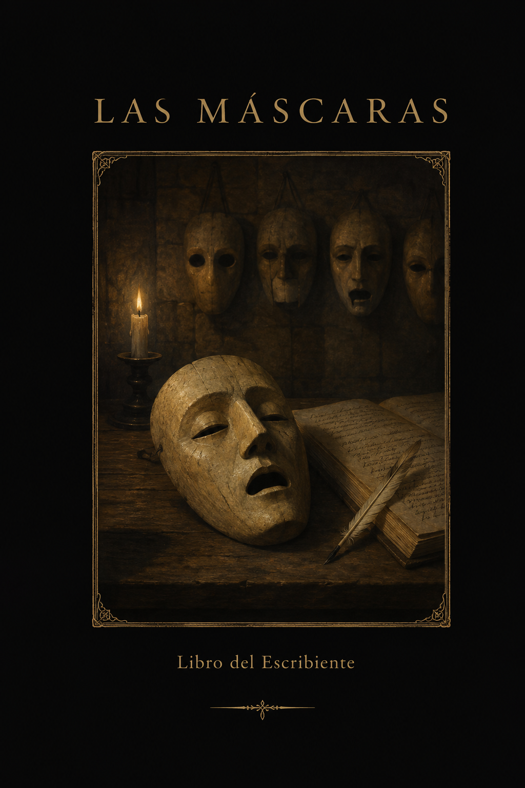

Libro · 2026
Las Máscaras
Libro del Escribiente
Son setenta y dos. De cada una hay una sola en todo el mundo, y quien la lleva recibe su potestad y su oficio, y también sus deudas y sus enemigos. Ninguna manda sobre otra. No hay dioses ni magia: lo único inexplicable de este mundo es que las máscaras funcionan.
No es una novela: es un texto sagrado encontrado. Treinta y nueve documentos, unas 35.000 palabras, dos o tres horas de lectura.